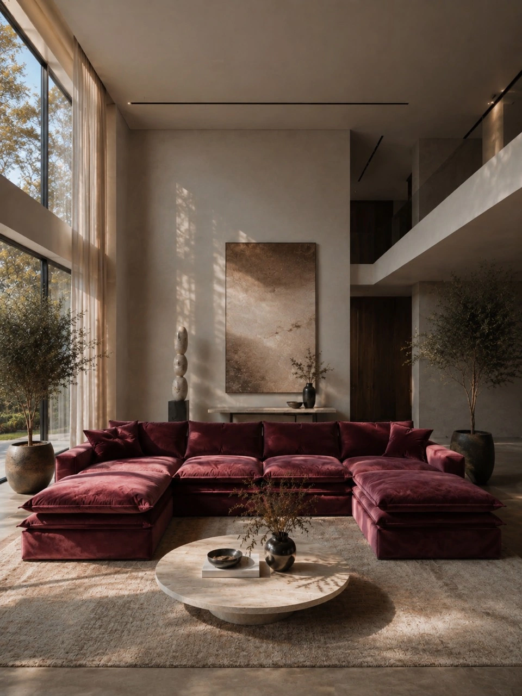

Фабрика-ателье мягкой мебели
Искусство
быть дома.
Создаём мебель с вашим характером.
По индивидуальным размерам.
На собственном производстве.

01 / Философия ателье
Сделано в России.
Создано для вас.
Свобода формы.
Точность исполнения.
Мы верим, что мебель должна чувствовать пространство. Его ритм, пропорции, свет. И прежде всего — человека, который в нём живёт.
OTUTTO — фабрика-ателье мягкой мебели. Создаём диваны, кровати и интерьерные изделия, работаем с тканью и кожей, разрабатываем индивидуальные лекала. От первого эскиза до последнего стежка — на собственном производстве.
Познакомиться с ателье02 / Коллекция
Характер в каждой линии

03 / Индивидуальный проект
От вашей идеи —
к точной форме.
Необычный радиус. Особая глубина посадки. Линия, которую вы придумали сами. Мы находим конструктивное решение, сохраняя характер вашего замысла.
Индивидуальные размеры, собственные лекала и ручная работа с тканью и кожей.
От идеи к реализациидизайнеров и архитекторов
Собственное
производство
Контроль каждой деталиТкань
и кожа
Материал под ваш замыселИндивидуальные
лекала
Свобода сложных форм04 / В контексте
Жизнь за пределами ателье
Ваш замысел — наша отправная точка